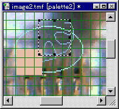

- Creating a project
- Open the Project menu and select "New..." to open the Project page of the New File dialog.

- Enter the TPF file name/
TPF directory name inside the dialog.
- When the OK button is pressed, any open projects are closed.
If the project has been edited, a dialog opens asking whether or not to save the file. - If the new project has been created correctly, it will be opened in an editable state.

- Opening a project
- Any project that is already open will be closed.
If that project has been edited, a dialog will open asking whether or not to save the file. - To open a project, open the Project menu and select "Open..." This opens the Open File dialog, where you specify the target TPF and then press the Open button.
- If there are any previously edited projects, then a list of the recently edited files will be displayed in the File menu, and it is also possible to select the file from here.
- If the file is properly loaded, the project will open in an editable state.
- Saving a project
- To save a project, you can select either "Save" or "Save As..." from the Project menu.
- When saving a file for the first time or with "Save As..." the Save File dialog will open. Here you can specify a name for the file.
- Adding a picture to a project
-
Note: Pictures are assemblages of related images and palettes.
- From the Project dialog bar or the
Project menu, select "Picture" "Add" (or "Change" if manipulating an existing picture) to open the Edit Picture dialog.

- Select picture name and TMF/TLF.
Since the TMF/TLF combo box lists the files that exist in the directory specified by the TMF/TLF directory, the selection can be made from here.
To create a new TMF/TLF, press the New button.
When TMF is 4bit and TLF is 8bit, you can select which palette number (0~15) to use for TLF.
- Open related pictures using the Project dialog bar or by clicking on the picture node in the project window.

- Delete the currently selected picture using the Project dialog bar or by selecting "Picture" "Delete" from the Project menu.
Pictures reference TMF/TLF file names, so the TMF/TLF assemblage must be in the TMF/TLF directory. - Open the Project menu and select "New..." to open the Project page of the New File dialog.
- Creating a new 4bit/8bit CI texture
- From the File menu, open the Image page of the New dialog.
- Select the size and bit mode, then press OK to open a new Texture Image window.
-

- Opening a 4bit/8bit CI Texture
- Open a texture image file from the File menu by selecting either "New..." or by selecting a file from the list of recently edited TMF files.
- Saving a 4bit/8bit CI texture
- Select either "Save" or "Save As" from File menu.
- Editing an existing image as a 4bit/8bit CI texture
- Do this using the Import function.
- First, create or open a texture image for editing.
- Then, select the target file format from "Import" in the File menu.
- Once imported, specify where to position the image.
-
Press the Return key to set, or use the Escape key to cancel.
Manipulate the tracker (selection frame)to enlarge or reduce.
- Alternately, a BMP file converted to 4bit/8bit can be directly opened from the File menu for TMF/TLF.
- Previewing an image during editing on the target (NINTENDO64) using IS-VIEWER64
- Select "Preview" in the View menu or press the NINTENDO64 button on the View tool bar to toggle preview to IS-VIEWER64 ON/OFF in each texture image window.
- When this check is ON, any changes to images or palettes will automatically update the texture on IS-VIEWER64.
- Exporting a created CI texture to a project
- Use the Export function to save the file as C language source.
- From the File menu, select "Export" and then select "C."
- In addition to specifying the header file and C source file name, you can specify extern (can be externally referenced)/static (internal static binding), turn const (change prohibited) ON/OFF, and specify 64bit alignment.
- With export, the C source file is created.
-
If static is selected, the header file is not created.
- Creating a palette
- Open the Palette menu and select "New..." to open the Palette page of the New dialog.
- Select the bit mode and 16bit RGBA or 16bit IA and then press OK.
- If done correctly, a new page is created in the Palette dialog bar.
- Editing a palette
- In the initial state, the palette is completely black, so add color by pressing the "Properties" button or double-clicking to open the Color Selection dialog.
- To borrow from another palette, open the page for the other palette, select the range and press the Copy button, select the page and position where you want to begin pasting, and then press the Paste button.
- Saving a palette
- Open the Palette menu and select either "Save" or "Save As..."